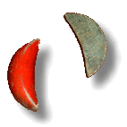
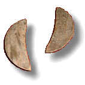

線上抽籤
因籤詩是借古事而來，與現今社會的複雜度相較，兩者的吻合度很難說，可能神在隱喻，也可能神要你作借鏡，故只能取其整體要義，無法對兩件事都準確。
請向神明秉告出自己的住址、姓名及生辰八字、欲詢問的事情後，按下按鈕進行擲杯。一事得籤後，再求另一事。

聖筊
笑筊

陰筊
- 聖筊，即一正一反(一陽一陰)，表示神應許所祈求的事情。
- 笑筊，即正正，二平面者(二陽面)，表示陳述不清楚無法裁示或明知機緣不足；何必一問；或所提問題自有主張、已有定數，又何必多此一問。
- 陰筊，即反反，為二凸面者(二陰面)，表示不應許所祈求的事情。